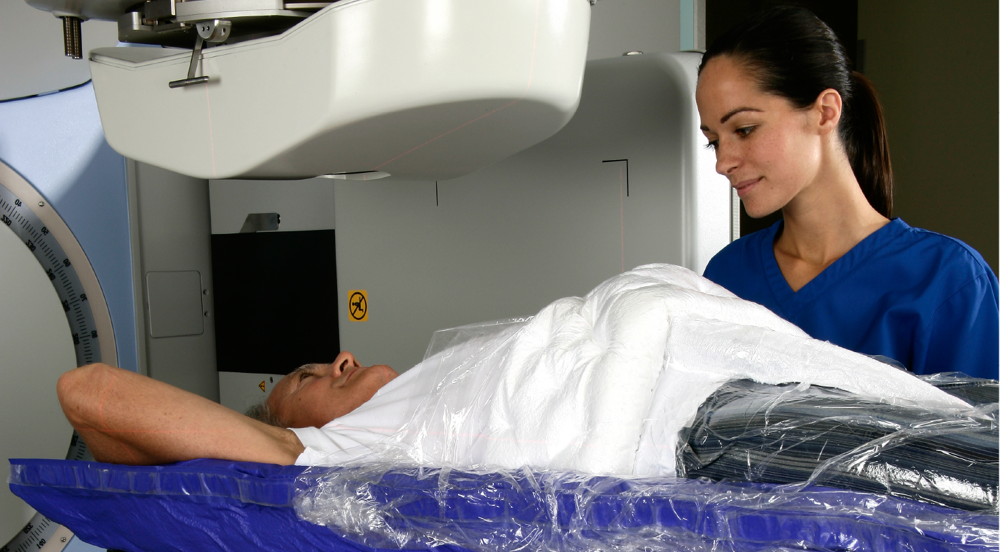
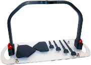
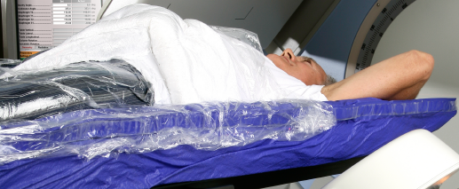
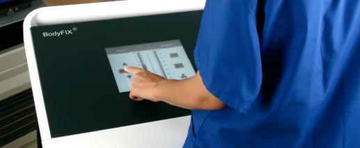
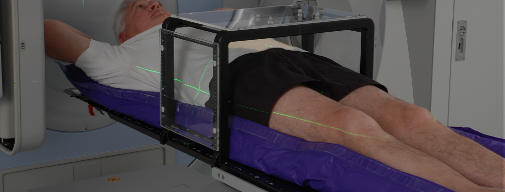
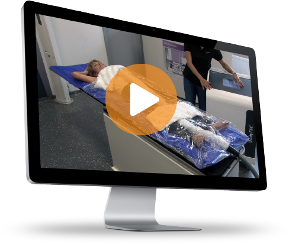

<!DOCTYPE HTML>
<html>
<head>
	<meta http-equiv="X-UA-Compatible" content="IE=edge">
    <meta name="viewport" content="width=device-width, initial-scale=1">
    <meta charset="utf-8">
	<title>Elekta</title>
	<link rel="stylesheet" type="text/css" href="elekta.css">
	<link href="dist/css/bootstrap.min.css" rel="stylesheet">
	<link rel="stylesheet" type="text/css" href="./css/font-awesome.min.css">
	<link rel="stylesheet" href="./font-awesome/css/font-awesome.min.css">
	<meta name="viewport" content="width=device-width" />
	<script src="./js/jquery-1.11.2.min.js"></script>
	<script src="./js/main.js"></script>
	<link href='http://fonts.googleapis.com/css?family=Source+Sans+Pro:300,400,600,400italic' rel='stylesheet' type='text/css'>
	<script src="//app-ab05.marketo.com/js/forms2/js/forms2.min.js"></script>
//Load Marketo's Munchkin tracking
<script src="http://munchkin.marketo.net/munchkin.js"type="text/javascript"></script>
<script src="//app-sjp.marketo.com/js/forms2/js/forms2.js"></script>
<form id="mktoForm_333"></form> 

<script>
    MktoForms2.loadForm("//app-sjp.marketo.com", "466-AGZ-592", 333, function(form) {
    //Measures form 1 load event .
    Munchkin.munchkinFunction("clickLink",{href:"/form1load"})
    form.onSuccess(function(callback) {
    //Measures form 2 load event. This should be equal to form 1 submission count.
        Munchkin.munchkinFunction("clickLink",{href:"/form2load"})
        form.getFormElem().hide();
        MktoForms2.loadForm("//app-sjp.marketo.com", "466-AGZ-592", 334, function(form) {
            form.getFormElem().show();
            //Measures form 2 submission. Uses Marketo Form's onSuccess method.
            form.onSuccess(function(values, followUpUrl){
                Munchkin.munchkinFunction("clickLink",{href:"/form2submission"})
                //Keep user on same page after form submission
                return false;
            });
        });
    });
});
</script>
</head>


<!-- ////   B O D Y  //// -->
<body>
	<div id="main">

		<!-- ////    H E A D E R   //// -->	
		<div class="row navigation-bar">
			<div class="position-navigation-bar">
				<div id="header-img-container">
					
				</div>	
				<div class="header">See why BodyFIX&reg; aids top performance.
				</div>
				<div id="right-side-header-container">
					<button id="navigation-cta-button">Contact Us<span></button>
					<i class="fa fa-bars navigation-button"></i>
					<p id="menu" class="navigation-headings">Menu</p>
					<i class="fa fa-times-circle close-button"></i>
					<p id="close" class="navigation-headings">Close</p>
				</div>	
			</div>
			<div class="row navigation-container">
				<div class="col-lg-12 dropdown-container">
					<ul>
						<div class="col-sm-2 col-sm-offset-1 col-md-2 col-lg-2 navigation-icons">
							<i class="fa fa-file fa-2x blue-icon-fill"></i>
							<li>Read</li>	
						</div>
						<div class=" col-sm-2 col-md-2 col-lg-2 navigation-icons">
							<i class="fa fa-play-circle-o fa-2x"></i>
							<li>Watch</li>
						</div>
						<div class=" col-sm-2 col-md-2 col-lg-2 navigation-icons">
							<i class="fa fa-download fa-2x"></i>
							<li>Dowload</li>
						</div>
						<div class=" col-sm-2 col-md-2 col-lg-2 navigation-icons">
							<i class="fa fa-users fa-2x"></i>
							<li>Learn</li>
						</div>
						<div class=" col-sm-2 col-md-2 col-lg-2 navigation-icons">
							<i class="fa fa-envelope fa-2x"></i>
							<li>Contact</li>
						</div>
					</ul>
				</div>
			</div>
		</div>	
		
		<div id="inner-content">
			<!-- /////     H E R O    ///// -->	
			<div class="row full-screen-image">
				<div class="heroContainer">
					
				</div>
				<div id="hero-txt-cont"> 
					<p id="hero-headline" class="hero-txt">Precise, Personal<br>Positioning</p>
					<p id="p-two" class="hero-txt">A customized immobilization system ensures accuracy for conformal radiation discovery.</p>
					<a href="#">
						<button class="learn-more-cta">learn more</button>
					</a>
				</div>
			</div>

			<!-- ////  S T U D Y - F I N D S - S E C T I O N     //// -->
			<div class="row article-position">
				<div id="opacity-bar">
					<div class="social-media-divider">
						<div id="social-media-container">
							<p id="share-cta">Share Your Network</p>
							<div id="social-icon-content">
								
								
								
								
								
							</div>	
						</div>	
					</div>
				</div>		
				<div class="bg-text " >
					<p id="article-title"> Study finds bodyfix A superior Immobilization Device for Spinal SBRT</p>
					<p class="article-topic-name">Researchers compared three Immobilization on intrafaction Motion for the Spine Stereotactic Body Radiotherapy Using Cone Beam Computed Tomography
					</p>
					<p class="article-text">Researchers compared three immobilization platforms for spinal stereotactic body radiotherapy (SBRT) and BodyFIX® proved most effective. Highly conformal radiation to extremely sensitive locations requires tight planning margins and steep dose gradients to normal tissue. BodyFIX minimized patient motion, reducing errors in imaging and treatment.
					<a href='#'> READ MORE</a>
					</p>
					<p class="journal-citation"> 
						<span class="italic">Internal Journal of Radiation Oncology</span>
						,Dec. 8, 2011. Radiation Medicine Progra, Princess Margaret Hospital, Toronto, Ontario, Canada, Department of Radiation Oncology, University of Toronto, Toronto, Ontario, Canada.
					</p>
				</div>
				<div id="logo-img">
					
				</div>
				<div class="second-divider">
					
					<p class="arrow-learn-more">Learn More</p>
				</div>	
				<div class="row">
					<div class="col-xs-6 col-md-6 col-lg-6 top-images">
						
					</div>	
					<div class="col-xs-6 col-md-6 col-lg-6 top-images">
						
					</div>
				</div>
			</div>	

			<!-- //// C O M F O R T - P R E C I S I O N - P E R S O N A L I Z E D //// -->
			<div class="section-three">
				<div class="row full-screen-image">
					<div class="heroContainer scan-container">
						
					</div>
				</div>
				<div class=" row comfort-precision-personalized-containers">
					<div class=" product-position">
						<div id="product-spacing">
							<div class=" product-container ">
								<div class="icon-placement"> 
									<i class="fa fa-smile-o fa-2x adjective-icon-container"></i>
								</div>	
									<p class="product-text product-heading">Comfort</p>	
									<p class="product-text-paragraph">A cushioned BlueBAG gives gentle compression to envelop and support the body. Creating a relazing, secure environment helps lessen a patient's inter- and intrafractional.</p>	
							</div>
							<div class="product-container"> 
								<div class="icon-placement"> 
									<i class="fa fa-bullseye fa-2x adjective-icon-container"></i>
								</div>
								<p class="product-text product-heading">Precision </p>	
								<p class="product-text-paragraph">Compatible with carious clinical indications and delivery platforms, the advanced, vacuum technology ensures stability, thereby promoting artifact-free imaging </p>	
							</div>
							<div class="product-container last-product-container">
								<div class="icon-placement">  
									<i class="fa fa-male fa-2x adjective-icon-container"></i>
								</div>	
								<p class="product-text product-heading">Personalized </p>
								<p class="product-text-paragraph">The special design is custom-fitted to maintain a patient's shape. After initial setup, each individualized form is reusable, offering consistency and accelerating treatment time to optimize workflow.</p>	
							</div>
						</div>	
					</div>
				</div>
			</div>	

		<!-- ////  V I D E O  C O N T E N T  -  S E C T I O N  T H R E E   //// -->
			<div id="full-grey-container">
				<div class="row body-fix-container">
					<div class=" col-xs-12 col-md-6 col-md-offset-3 col-lg-6 col-lg-offset-3 how-it-works-title centered">Watch How BodyFix&reg; Works
					</div>
					<div class="computer-container col-md-6 col-lg-6 col-lg-offset-1">
						<a href="http://embed.vidyard.com/share/0TleyazOYPB_0E_aiZHz1Q" class="video-player-link">
							
						</a>
					</div>					
					<div class=" col-xs-12 col-md-4 col-lg-4 bodyFix-content">
						<p class="how-it-works-content larger-font">
							A step-by-step process shows how easy it
							is to use BodyFIX® for patient positioning
							and immobilization. The personalized
							system offers versatility for a wide range
							of modalities and disease sites.
						</p>
						<p class="how-it-works-paragraph small-font">
							This quick video provides an introduction to more easy-to-follow guides on how to operate BodyFIX® for fractionated treatments and stereotactic radiosurgery. A BlueBAG™ vacuum cushion is contoured to the patient for better positioning and immobilization. The customized imprint can be reproduced for subsequent sessions, aiding faster setup and more efficient workflow. For high-precision delivery techniques, a cover sheet and diaphragm control are added for utmost stability.
						</p>
					</div>
				</div>
			</div>	

			<!-- //BODYFIX SUPPORTS MAXIMUM PATIENT IMMOBILITY-->
			<div class="row">
				<div id="green-down-arrow">
					
					<p class="arrow-learn-more wht-learn-more">Learn More</p>
				</div>	
				<div class= "green-container col-lg-12 centered">
					<div id="center-grn-text">
						<p id="product-one-header" class="larger-font">BodyFIX Supports Maximum Patient Immobility</p>
						<p id="product-one-synopsis">Patented technology offers versatility, uniformity and improved workflow.</p>
						<button class="download-now" >
							<i class="fa fa-chevron-circle-down fa-2x down-arrow-download-icon"></i>
							<span class="download-button-text">Watch and Download Now</span>
						</button>
					</div>
				</div>	
				<div id="wht-down-arrow">
					
					<p class="arrow-learn-more wht-learn-more">Learn More</p>
				</div>	
			</div>
		</div>
	</div>	
	<!-- CONTACT US -->
	<div id="contact-us-container">
		<p id="contact-us-text">Contact Us For More Information</p>
		<form id="mktoForm_333"></form>
	</div>


	<!-- / / / / / / /       F O O T E R     / / / / / / / -->
	<footer>
		<div class="footer-row">

				<div class="footer-logo">
					
				</div>
				<div id="about-links">
					<p class="footer-headers">About Body Fix</p>
					<a href="#"><p>Read Journal Articles</p></a>
					<a href="#"><p>Watch How To videos</p></a>
					<a href="#"><p>Download Product One-Pager</p></a>
					<a href="#"><p>Use Cases</p></a>
					<a href="#"><p>Contact Us</span></p></a>
				</div>
				<div id="social-media-links">
					<p class="footer-headers">Connect<br>With Us</p>	
				<div id="footer-links">
					<a href="#"><i class="fa fa-twitter"></i></a>
					<a href="#"><i class="fa fa-facebook"></i></a>
					<a href="#"><i class="fa fa-linkedin"></i></a>
				</div>
			</div>

	</footer>	


<!-- MAIN CONTAINER END -->
</body>

</html>


<!-- ////// SCRIPT ///////// -->